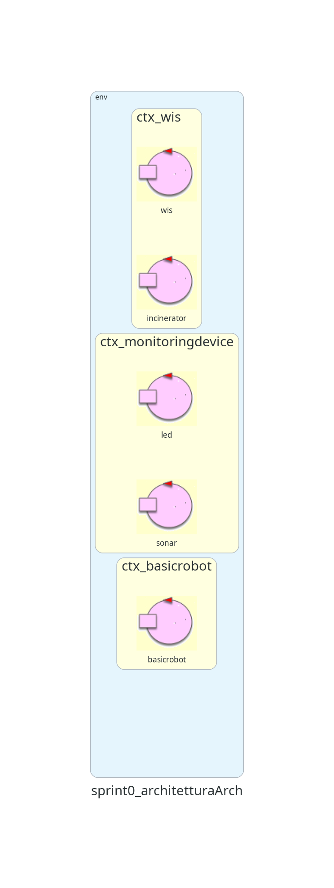
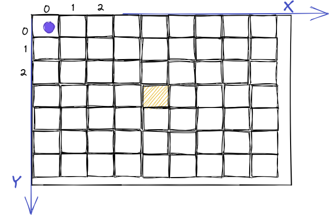
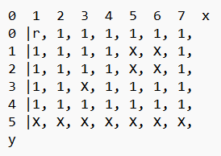
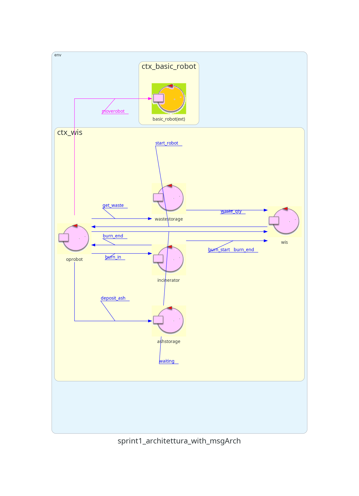

Sprint 0
Nello
Sprint 0
si sono formalizzati i requisiti del committente e si è andato ad impostare un primo modello del sistema (figura
sotto).

Sprint Goal
Gli obiettivi di questa fase sono due:
-
Analizzare problematiche emerse dalla fase precedente (o non specificate) relativamente al Core
Business
del sistema (WIS-OpRobot-WasteStorage-Incinerator-AshStorage).
-
Progettare e fornire al committente una prima demo del sistema relativo al Core Business, definire ed effettuare i primi test
plans.
Analisi del problema
Come rappresentare l'area di servizio?
Per fare in modo che la macchina possa comprendere come è strutturata l'area di servizio, essa può essere
rappresentata in un piano cartesiano.
Inoltre, per muovere il robot utilizzermo il
software fornito dal committente ed esso internamente
definisce l'area di movimento del robot
tramite una mappa che utilizza tale rappresentazione.
La stanza viene quindi suddivisa in una griglia, dove ciascuna cella è un quadrato di lato D, ovvero il diametro
dell'
OpRobot.
In questo modo possiamo formalizzare il concetto di posizione, intesa come una coppia di coordinate cartesiane.
Per semplicità,
HOME è l'origine(0,0).
Nella stanza sono presenti diverse posizioni rilevanti:
-
HOME
-
WASTEIN
-
BURNIN
-
BURNOUT
-
ASHOUT

Come rappresentare le posizioni rilevanti all'interno nella mappa?
Ci sono diverse opzioni possibili:
- L'informazione è contenuta all'interno dell'OpRobot, che conosce le varie coordinate delle varie
posizioni e si sposta di conseguenza.
- Si rappresentano le coordinate delle posizioni rilevanti in una base di conoscenza prolog.
- Il robot non conosce nessuna posizione, ma conosce il percorso che deve attuare per arrivarci.
Si è preferita la seconda scelta, in questo modo si va ad evitare di assegnare ad un solo attore tutta
l'informazione relativa alle posizioni,
dando la possibilità a tutti i componenti di accedervi (sia il
WIS che
OpRobot necessitano di
queste informazioni).
Inoltre questo approccio rimuove delle dipendenze logiche tra attori, che nel caso della soluzione
2
erano presenti.
La soluzione 3 rende i componenti non modulabili, che influirebbe negativamente sulla scalabilità del
sistema.

WIS
Il
WIS è gia stato identificato come attore nella fase precedente e assume il ruolo di
"controllore/gestore" del sistema che fa da coordinatore delle comunicazioni. Questo fa sì che venga applicato
correttamente il
Single responsibility principle.
OpRobot
Il cliente mette a disposizione un
DDR Robot, l'attuatore fisico del comportamento dell'
OpRobot
che è un entità astratta che incapsula la logica del robot, e il suo sw di controllo (
BasicRobot).
L'
OpRobot sarebbe meglio rappresentato come attore, poichè il sw fornito dal cliente, che controlla il
DDR,
comunica solamente tramite scambio di messaggi. Di conseguenza è necessario modellarlo affinché
sia in grado di utilizzare
l'interfaccia offerta da
BasicRobot per comandare il robot fisico.
Come muovere il robot da una posizione rilevante ad un altra?
Il software
BasicRobot24, fornito dal cliente, mette a disposizione un messaggio
moverobot(TARGETX,TARGETY) che in base alle coordinate inserite, muove il robot
verso di esse in modo automatico
Come avviene lo spostamento di un pacchetto da parte di OpRobot?
Per semplicità, per rappresentare lo spostamento di 1 RP da una parte all'altra dell'area di servizio,
OpRobot mantiene
tramite una variabile (ad esempio booleana) l'informazione relativa al possedimento o meno di un pacchetto in un
determinato momento.
Interazioni
Dai requisiti è noto che il robot può iniziare il suo ciclo se il
Waste Storage non è vuoto, l'
Ash
Storage non
è pieno e l'
Incinerator non sta bruciando. Per verificare quando tali condizioni sono vere ci sono, ad
esempio, due possibilità:
- OpRobot controlla attivamente lo stato del sistema e decide quando partire
- Il WIS segnala all'OpRobot che può partire.
Si è scelta la seconda opzione, poichè il WIS è già stato designato come gestore del sistema. Il segnale verrà
modellato come una dispatch in quanto è un'informazione fire and forget.
Visto che il
WIS non sa in quale momento il robot è fermo in home ad aspettare il messaggio di inizio, si
ritiene
opportuno di introdurre un'altra Dispatch per questo scopo.
Per tutte le interazioni con
Waste Storage,
Incinerator e
Ash
Storage si utilizzano dei messaggi che possono essere modellati come delle Dispatch, questo poichè:
-
sono tutti messaggi che non necessitano di una risposta con un contenuto informativo.
-
anche se modellati come request/reply, quest'ultima non darebbe conferma dall'esecuzione corretta
dell'azione.
Waste Storage
Il
Waste Storage viene modellato come un attore in quanto è un'entità che deve essere sempre attiva per
poter ricevere messaggi e rispondere di conseguenza.
Come rappresentare la Scale?
-
Tramite un attore separato.
-
Tramite un POJO all'interno del WS.
A prima vista, la prima opzione dovrebbe rendere il sistema più modulare. Però si andrebbero ad introdurre una
serie di interazioni tra il
Waste Storage e la
Scale ogni volta che viene fatto un deposito o un
prelievo di 1 RP.
Di conseguenza, la stretta interazione tra i due componenti crea una dipendenza logica che riduce la
modularità e la loro riusabilità.
Per questo motivo si è preferito rappresentare la
Scale tramite una variabile all'interno del
Waste
Storage.
Interazione con il WIS
Da requisiti, il
WIS deve sapere il valore misurato dalla
Scale. Visto che quest'ultima è
rappresentata tramite una variabile, sono possibili due opzioni:
-
Il WIS richiede tramite una Request/Reply il valore della Scale periodicamente.
-
il WIS osserva la variabile e l'informazione viene trasmessa tramite updateResource.
L'opzione scelta è la seconda. Con l'opzione 1 il
WIS dovrebbe periodicamente inviare una richiesta di
aggiornamento al
Waste Storage per
ottenere il valore, costituendo così una interazione a Polling.
Per questo motivo si preferisce che sia il
Waste Storage
ad aggiornare il
WIS direttamente ad ogni
cambiamento del suo stato interno.
Deposito RP nel Waste Storage
Il waste storage interagisce anche con un entità esterna che in momenti non precisati può depositare 1 RP.
Dato che il Waste Storage non ha una capacità massima di RP, tale interazione può essere modellata tramite una
dispatch
per lo stesso
motivo analizzato nel caso di OpRobot.
Ash Storage
L'
Ash Storage viene modellato come attore poichè è un'entità che scambia messaggi con il robot e con
l'entità esterna al sistema quando si richiede il prelievo delle ceneri.
Prelievo di cenere da parte di un entità esterna
Un'entità esterna può interagire in momenti non precisati con l'Ash Storage per richiedere di prelevare tutte le
ceneri attualmente presenti.
Per modellare questa interazione ci sono due possibilità: Dispatch o Request/reply.
Si è deciso di utilizzare una Request/Reply perchè la risposta deve contenere la quantità di cenere prelevata
(anche nel caso in cui il AS sia vuoto, quindi riporterà 0 nella risposta)
Incinerator
L'
Incinerator è già stato modellato come un attore nella fase precedente.
Come modellare l'accensione dell'Incinerator?
Da requisiti,
Incinerator riceve da un'entità esterna un
segnale di accensione. Esso viene
modellato come una dispatch, in quanto non è necessario che venga ricevuto da altri componenti (evento), mentre
una possibile risposta non
avrebbe un contenuto informativo utile/affidabile (in caso si usasse una request reply).
Come notificare il WIS dell'inizio della burning phase?
Il
WIS, da requisiti, ha necessità di sapere se l'
Incinerator stia bruciando o meno.
Le opzioni possibili sono:
-
Incinerator invia un segnale al WIS
-
OpRobot invia un segnale al WIS
Si è scelta la prima strada, per compartimentalizzare meglio il sistema, evitando di dare troppe responsabilità
a
OpRobot.
Il segnale inviato al
WIS è modellato come una dispatch per gli stessi motivi
elencati per il punto precedente.
Come notificare WIS e OpRobot della fine della burning phase?
Da requisiti è noto che
Incinerator notifica
OpRobot e
WIS della fine della burning phase.
Tale segnale è nuovamente modellato come una dispatch per gli stessi motivi elencati sopra.
Entità esterna
Da requisiti è noto che esiste un'entità esterna che gestisce alcune funzionalità come:
-
Depositare RP nel Waste Storage
-
Prelevare la cenere dall'Ash Storage
-
Accendere l'Incinerator
Nel testo del committente non è specificato se questa entità sia esterna solo ai componenti ma interna al
sistema oppure esterna a tutto.
Per semplicità e per mantenere il sistema più scalabile, si è deciso di considerare l'entità come esterna
all'intero sistema. Di conseguenza, nella fase di progetto si userà un mock che simulerà le interazioni con
essa.
Contesti
Sarebbe possibile mettere ogni componente in un contesto diverso, in quanto aumenterebbe la scalabilità del
sistema.
Questo però significherebbe investire in più macchine per ospitare ciascun nodo. Per questo motivo, visto che
non è specificato nei requisiti, si è deciso di organizzare i contesti in questo modo:
-
ctx_wis: WIS + Incinerator + OpRobot + Waste Storage +
Ash Storage
-
ctx_basic_robot: il Basic Robot per sua definizione è già presente in un contesto
separato
In
rosso gli attori e contesti aggiunti in questa fase.
Architettura Logica

Test Plans
|
Test
|
Attori
|
Descrizione
|
Modello
|
|
Verifica delle condizioni e start OpRobot
|
|
Il WIS controlla se le condizioni per l'avvio di OpRobot sono verificate e gli invia il segnale
d'avvio.
|
|
|
Prelievo e inserimento di un RP dal Waste Storage
|
-
OpRobot e Entità Esterna
-
Waste Storage
|
L'entità esterna inserisce un RP, succesivamente l'OpRobot interagisce con il Waste Storage per prelevare l'RP. Si controllano
il peso dell'RP dato dalla bilancia all'interno del WS per verificarne il corretto funzionamento
|
|
|
Deposito e prelievo cenere in Ash Storage
|
-
OpRobot e EntitàEsterna
-
Ash Storage
|
OpRobot segnala all'Ash Storage il deposito della cenere.
L'entità esterna successivamente richiede il prelievo di un RP di cenere, controllando che la quantità fornita sia quella corretta
|
|
Deposito di un RP nell'Incinerator
|
|
OpRobot interagisce con l'Incinerator per depositare un RP.
|
|
|
Fine burning phase
|
|
L'incinerator comunica a OpRobot ed al WIS che ha finito di bruciare un RP.
|
|
|
Prelievo cenere da Incinerator
|
|
OpRobot segnala all'Incinerator il prelievo della cenere.
|
|